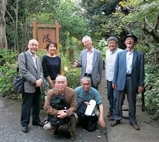

平成25年10月6日（日）
於 横浜（三溪園）・隣花苑

横浜（三溪園）・隣花苑
| （表） | 発句 | 蜻蛉にしじまさざ波立ちにけり | 光 義 |
| 脇句 | こぞりて詠まむ秋隣花苑 | らいむ | |
| 第三 | 天高し五重の塔を見上げゐて | 壊 殻 | |
| 四句 | テンポイントに夢を見し頃 | 行 松 | |
| 五句 | 朝刊におどる見出しや雪催 | 峻 坊 | |
| 六句 | 石の仏にせめて酒など | 榮々峰 | |
| （裏） | 初句 | 菜の花や埋もれむばかりへんろ路 | 光 義 |
| 二句 | 春の風受けそよぐ黒髪 | 洋 々 | |
| 三句 | ざわめきに待てぬものあり春炬燵 | らいむ | |
| 四句 | 星砂を咬む波頭かな | 壊 殻 | |
| 五句 | 麦秋やあなたは何と云ふかしら | 行 松 | |
| 六句 | 父の小言や今宵身に入む | 峻 坊 | |
| 七句 | 子と来たるパールハーバー無月かな | 榮々峰 | |
| 八句 | 火の祭にも鼓動のリズム | 光 義 | |
| 九句 | 北の果地球の命響き有り | 洋 々 | |
| 十句 | 浪漫求めてボヘミアン生く | らいむ | |
| 十一句 | 越えて行く吉野の山や桜散る | 壊 殻 | |
| 挙句 | 目覚めて瀬戸の朝日見るかな | 行 松 |